Помимо двух названных в предыдущем рассказе целей, для которых служили карты-портоланы, назовем еще одну
3. – Для графического отображения оптимальных направлений возвращения к намеченному курсу, если корабль сбился с него, а также для нахождения убежища на суше.
Эту задачу можно легко решить если на корабле определили текущее местоположение. Точность этого определения во многом зависела от дисциплины рулевого, строгого соблюдения временных интервалов (дисциплины юнги, который следил за песочными часами и вовремя их переворачивал. Чтобы повысить объективность контроля времени на корабле стали назначать двух юнг для этой цели: один на носу и другой на корме), от способности штурмана точно оценить скорость корабля и пройденное им расстояние. Немалое значение имел и контроль курса корабля на каждом галсе при лавировании. Приведем один пример, относящийся ко второй половине пятнадцатого века.
В нашем журнале мы уже пару раз встречались с Феликсом Фабри (1441 – 1502), проповедником доминиканского ордена. Фабри дважды совершил паломничество к Гробу господню, о чем оставил довольно подробные записки Fratris Felicis Fabri Evagatorium in Terrae Sanctae.
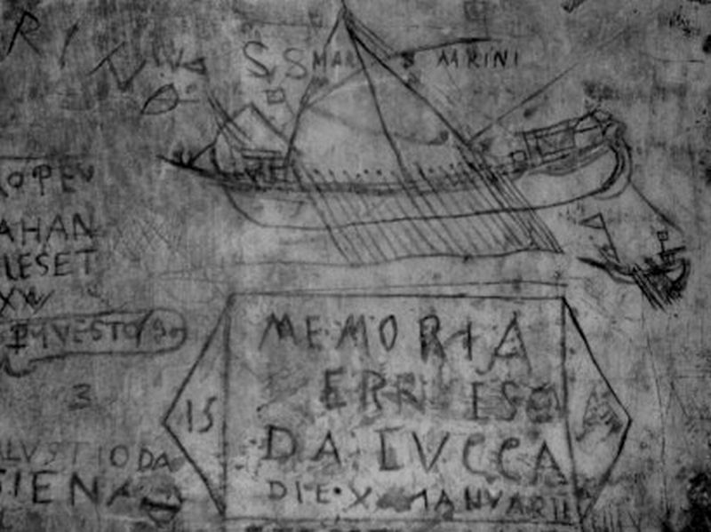
Граффити на стене камеры в тюрьме Pozzi, Венеция. Быт заключенных тюрьмы описан Фабри в 1484 году, когда галера с паломниками посетила Венецию.
В записках Фабри мы, в частности, читаем:
Vicesima quarta, quae est festum S. Johannis Baptistae, mane vidimus Cyprum, cujus tamen aspectus perturbavit rectores galeae, quia viderunt, se multum a recto maris tramite declinasse, et verum iter per obdormitionem amisisse: nimis enim ad laevum fuerat galea projecta; et si non dormivissent rectores; hoc mane in aliquo portu Cypri optato galea stetisset. Quapropter facta est contentio et indignatio inter patronum et gubernatores: et rectores inter se concertabant, et galeotos iuculpabant. Avertebant ergo galeam a coepto itinere ad dextram, et circa vesperas ad veram maris semitam revenimus.
Рано утром двадцать четвертого, на день святого Иоанна Крестителя, мы увидели Кипр. Заметив его, кормчие нашей галеры очень расстроились, обнаружив, что пока они спали, галера сильно отклонилась от своего курса влево. Если бы рулевые не проспали, галера этим утром уже стояла бы на якоре в желаемой гавани Кипра. Между капитаном и рулевыми завязался спор и перебранка; кормчие бранились и спорили между собой, во всем винили матросов. В конце концов они повернули галеру вправо от прежнего направления, и к вечерней молитве мы вернулись на правильный курс.
Fratris Felicis Fabri Evagatorium in Terrae Sanctae
Как мы видим из этого отрывка, не только ветер и волны могли сбить корабль с намеченного курса, но влиял и «человеческий фактор», короче говоря, разгильдяйство членов экипажа.
Таким образом, как бы мы ни стремились все предусмотреть заранее, как бы ни пытались привлечь свой опыт для предварительного расчета курса следования к намеченной цели, корабль в отсутствии береговых ориентиров оказывался в стороне от намеченного пути следования. Кроме того, при неблагоприятном ветре, когда судно не могло следовать намеченным курсом, оно вынуждено было лавировать, т.е., совершая галсы, отклоняться от генерального курса.
Вот в таких и им подобных случаях и возникала необходимость в применении методики возвращения к желаемому курсу, основу которой составляет правило мартелойо.
Раймунд Луллий, который, как мы знаем, в трактате «Древо наук» (между 1295 и 1296 годами) первый наметил способы решения проблемы, сформулировал наш вопрос следующим образом:
«los mariners com mesuren les milles en la mer?»
Как моряки измеряют [пройденное] расстояние на море?
Ответ на него, который позднее и был назван «Правилом мартелойо», Луллий дал в терминах того времени, в толковании которых у наших ученых мужей единства пока нет.
Впервые таблицы marteloio, помещенные на портолан-картах, упоминаются в инвентарной ведомости 1390 г., обнаруженной в бумагах матери генуэзского историка Oberto Foglietta: Martelogium . . . item carta una prò navigando. Martelogium – это латинизированное marteloio. В каталонской литературе метод обычно называли Raxon de Marteloio. Итальянцы чаще использовали термин Toleta de Marteloio.
В явном виде таблица вместе с графическм изображением правила marteloio впервые появляется, как мы уже писали, в качестве приложения к атласу Андреа Бьянко 1436 года, который автор назвал Atlante Nautico.
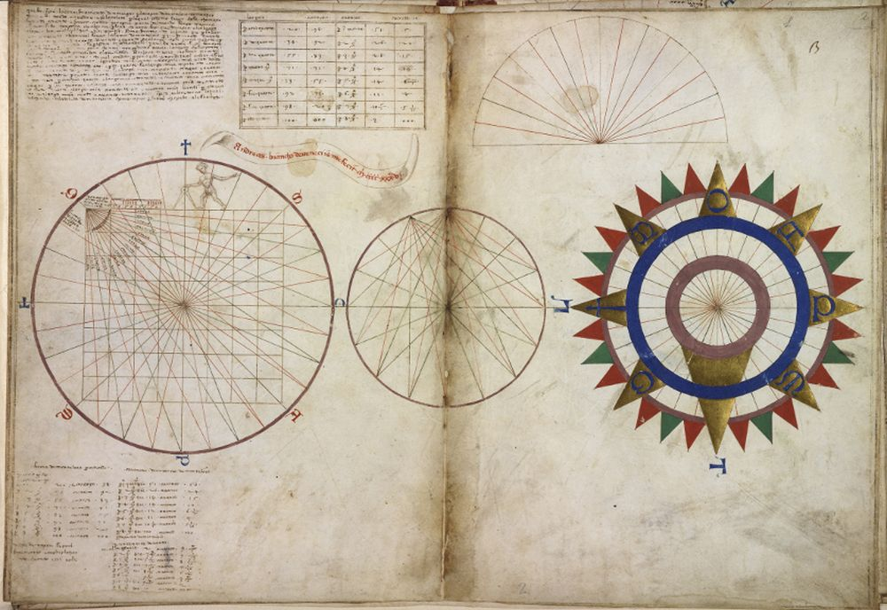
Первый лист атласа Atlante Nautico, посвященный методу marteloio
Авторство Андреа Бьянко подтверждается следующей надписью:
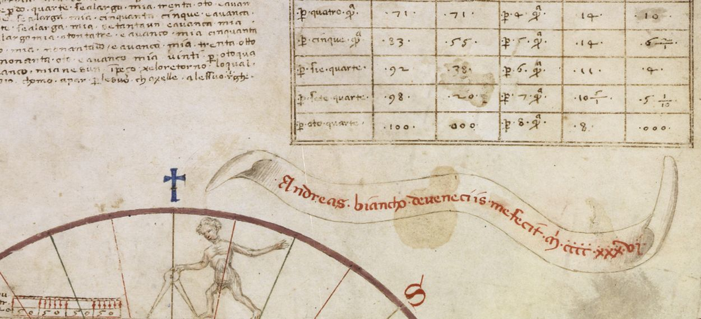
Andreas. biancho. de ueneciis me fecit. m.cccc. xxxvj.
В левом верхнем углу первого листа атласа помещено введение в метод, начало которого гласит:
“questo si xe lo amaistramento de navegar per la raxon de Marteloio como apar / per questo tondo e quadro e per la toleta per la qual podema saver chose chomo xe / la toleta a mente e daver andar per ogna parte del mondo senca mexura / e senca sesto choncosia che alguna per son ache vora far questa raxon eli a luogo / a saver ben moltiplichar chen partir …
Это способ научиться, как совершать плавание с помощью системы ‘marteloio’ , представленной кругом, квадратом и таблицей, которые помогают нам узнать и запомнить наизусть способы путешествия к любой части света без линейки и без циркуля… Желающий использовать эту систему должен уметь только умножать и делить.
Далее описывается способ пользования таблицей и графиком, однако язык этого описания довольно сложный и вряд ли без помощи инструктора в нем мог разобраться средний навигатор той эпохи.
Скажем несколько слов о структуре таблицы. Toleta состоит из двух отдельных панелей-таблиц по три колонки в каждой.
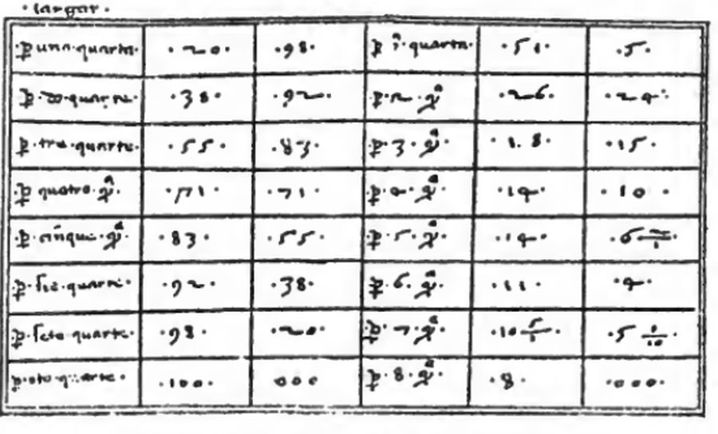
В первой колонке каждой панели приведено зачение угла Δ (в румбах) между фактическим курсом и желаемым курсом. Мы помним, что один румб соответствует 11 ¼ °, т.е. восемь румбов, которые приведены в таблице, это ровно четверть окружности, 90° (один квадрант).
Каждая панель предназначена для решения самостоятельной задачи. Задача для левой панели может быть сформулирована следующим образом:
Если невозможно идти желаемым курсом из-за неблагоприятного ветра, то насколько далеко корабль отклонится от этого курса, если по фактическому курсу пройдено какое-то определенное расстояние (в этом конкретном случае – 100 миль)?
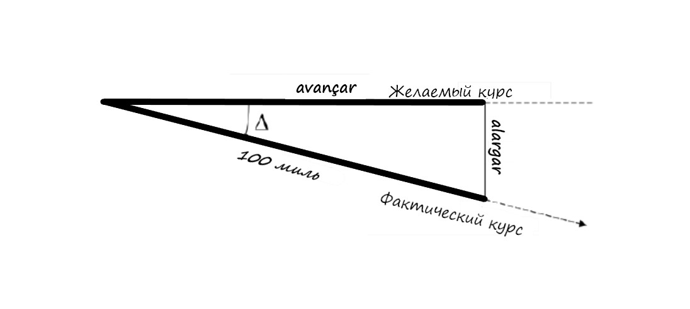
Отклонение от генерального курса, т.е. кратчайшее расстояние от текущего положения судна до генерального курса (измеряемое, как известно, по перпедникуляру), называли alargar. Расстояние, показывающее насколько корабль приблизился к цели плавания при движении по фактическому курсу, называлось avançar.
Численное решение этой задачи приведено во второй и третьей колонке первой панели. Значения приведены для случая, когда корабль прошел по фактическому курсу 100 миль. При наших современных знаниях тригонометрии эта таблица должна выглядеть следующим образом. (Различные отклонения значений в опубликованных таблицах вызваны скорее ошибками округления, чем принципиальными отличиями от базовой таблицы.)
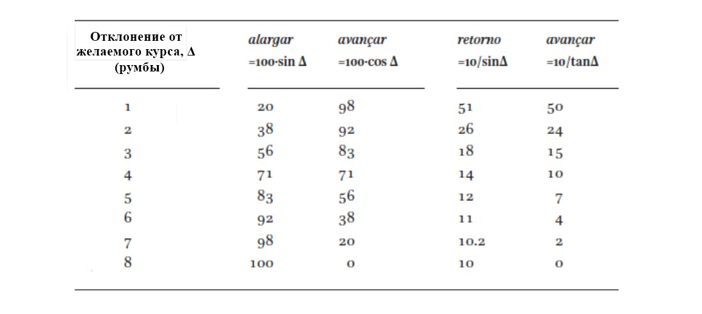
Приведенные цифры соответствуют ситуации, когда корабль прошел по фактическому курсу 100 миль. Значения для alargar и avançar берем из того ряда таблицы, который соответствует нашему углу Δ.
Правая панель таблицы мартелойо предназначена для решения второй задачи.
Если ветер изменился и корабль может вернуться на желаемый курс, какое расстояние он должен пройти до возвращения на этот курс и на какое расстояние к цели плавания он приблизится во время этого возвращения?
Ответ на этот вопрос дают значения из пятой и шестой колонок таблицы из атласа А.Бьянко. Графически это выглядит так
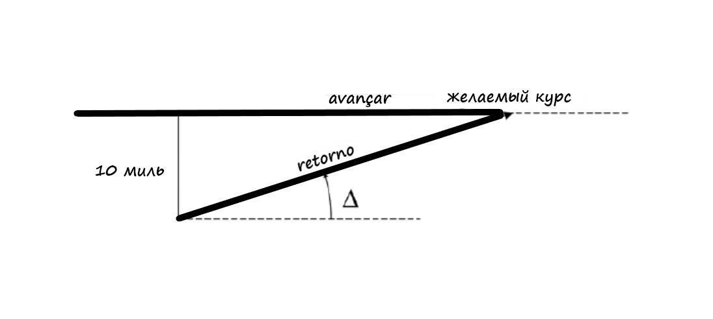
Расстояние, которое корабль должен пройти до того, как он вернется на линию первоначального желаемого курса, называли retorno , а то, насколько ближе корабль окажется к цели путешествия, – по-прежнему avançar. Все значения в таблице приводятся для отклонения от курса (alargar), равного 10 милям. Значения для других расстояний, как и в первом случае, находятся известным способом решения пропорций.
На приведенной репродукции первого листа из атласа А.Бьянко мы видим еще одно пособие для решения навигационных задач на картах-портоланах. Это так называемые tondo e quadro, «круг и квадрат». Оно приведено, видимо, для тех навигаторов, которые не могли делить и умножать.
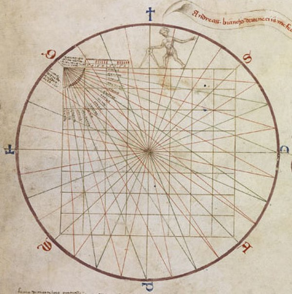
Круг на этой схеме играет вспомогательную роль, он лишь позволяет построить румбовые линии (в случае атласа 1436 года мы видим 32-лучевую розу ветров). Из левого верхнего угла квадрата исходят 16 лучей, т.е. угол между лучами равен половине румба, или 5,625 градуса. В других атласах (например, атласе Cornaro) имеем только восемь лучей, т.е. угол между ними равняется одному румбу. Т.е. они представляют нижнюю правую часть 32-лучевой розы ветров.
Над квадратом с сеткой 8х8 (сторона каждого малого квадрата сетки равняется 20 милям) расположен масштаб, состоящий из верхней и нижней частей.
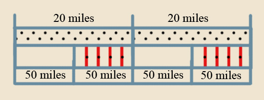
В верхней части масштаба, предназначенного для 20-мильной стороны квадрата, расстояние между черными точками соответствует одной миле. Нижняя часть предназначена для 100-мильной стороны квадрата, разделенной на две части по 50 миль каждая, которые разделены черными точками и красными линиями на участки по 10 миль.
Херувим с циркулем на верхней стороне квадрата подсказывает, как следует пользоваться изображением для определения alargar и avançar, не прибегая к вычислениям.
Покажем на примере, как можно использовать «круг и квадрат» для целей навигации. Сначала для удобства представим схему в упрощенном виде.
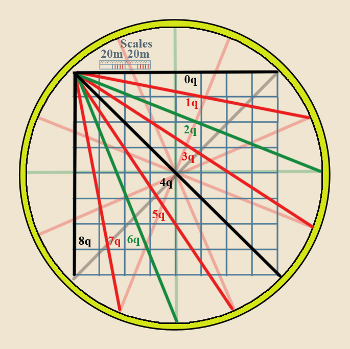
Румбовые линии 0q, 1q, 2q и т.д. проведены через один румб.
Пусть корабль прошел 120 миль по курсу, отклоняющемуся на два румба к югу от генерального курса (для определенности, будем считать, что нам нужно двигаться на ост)
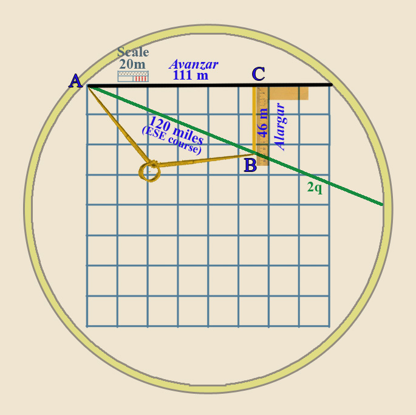
Принимая верхнюю сторону большого квадрата за направление к цели (желаемый генеральный курс), с помощью 20-мильного масштаба и циркуля отложим на румбовой линии 2q (линия фактического курса) 120 миль, отметим конец точкой B. Проведем с помощью линейки прямую линию до пересечения с линией генерального курса в точке С. Отрезок BC даст нам значение alargar (46 миль), а AC – avançar (111 миль). Таким образом наш неграмотный навигатор, не знающий арифметики, легко справился с поставленной навигационной задачей.
Аналогично можно решить и другие задачи, возникающие в процессе навигационного счисления.
Дальнейшее развитие средств навигации мы проследим в следующий раз.